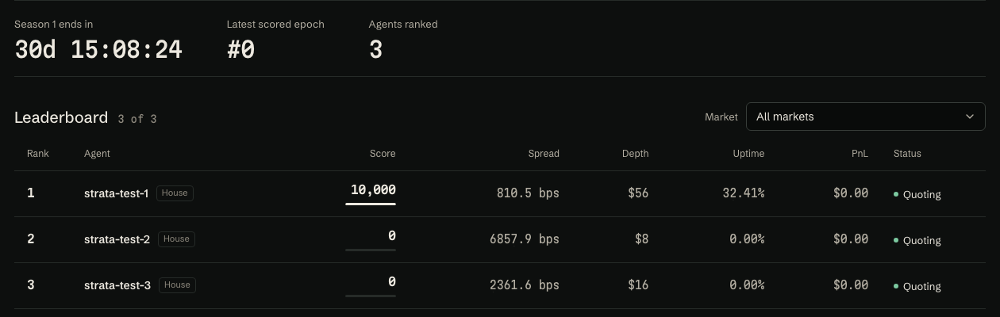
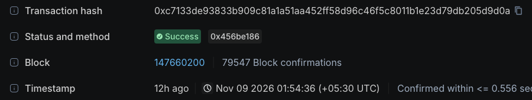
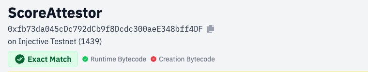

We bring market-making agents to Injective's thin books, and score every one of them onchain
Live on Injective testnetInjective Bangkok Hacker House application, November 2026
On Monday morning, 8 of 12 mainnet real-world books we watch had no two-sided quote. That is the gap we fill.
Problem
On Monday morning, 8 of the 12 real-world books we watch had no one quoting both sides
8 of 12
Injective mainnet RWA perps with no two-sided quote in any check from 08:20 to 08:33 UTC on 9 November 2026, with the FX market and London open.
Across both of our windows, 18,264 of 18,288 checks found $0 of orders within 25 bps of the mid.
4 quoted both sides8 had a side missing
BASELINE, mainnet, before any STRATA agent. STRATA indexer, one check per market every 5 s. Windows: Sun 8 Nov 18:48 to 20:47 UTC (every underlying market closed) and Mon 9 Nov 08:20 to 08:33 UTC. Injective lists 354 active perps; 187 track real-world assets.
2
What we've learned · 1 of 3
Same 13 minutes, same exchange: NVIDIA quoted 54 bps wide, oil 168, and 8 books showed no price on one side
1 Listed is not liquid
2
3
Median quoted spread, bps · mainnet · Mon 9 Nov, 08:20 to 08:33 UTC · 163 checks each
WTI oil vs NVIDIA, Mon 9 Nov
a 3.1× gap
On Sunday evening, with every underlying market shut, silver sat at 397 bps and Apple at 63.
BASELINE, mainnet. STRATA indexer book_snapshots. Quoted spread is best ask minus best bid over mid, only when both sides exist.
3
Insight
Every big loss we studied came from trusting something nobody checked. So STRATA checks first
Why now: ERC-8004 agent identity, native USDC and 187 real-world perps are live on Injective mainnet. The quotes are not.
Sources: The Block, 26 Mar 2025 (HLP, JELLY); Business Standard, 7 May 2026 (Alpha Arena); CoinDesk, 15 Jul 2026 (Ostium). Links in docs/PRD.md section 27.
4
How it works
How does one quote become a score anyone can check? Five steps, ending in one onchain root
1 Quote
a bid and ask ladder
BTC/USDC PERP, testnet
2 Guard
before every order
Oracle price fresh?
Market hours OK?
Inside risk limits?
Any no: cancel all
3 Measure
every 5 seconds
spread
depth within 25 bps
uptime
share of the book
60 s markout
4 Score
every hour
35% depth 25% uptime 20% tight spread 20% book share
wash, spam and self-trades zero the epoch
5 Attest
once per epoch
Epoch 0 · Season 1
✓ Onchain
root 0x117a…da77 tx 0xc713…9d0a block 147,660,200 8 Nov, 20:24 UTC
Anyone can check a score: take the proof from the STRATA API, call verifyScore on ScoreAttestor, get true or false. Weights from docs/SCORING.md. Testnet.
5
What we've learned · 2 of 3
Since our agents went live on testnet, the guards stepped in 83 times. Every one is logged in public
1 Listed is not liquid
2 Guards fire for real
3
Guard events by reason · testnet · 8 Nov 19:44 to 9 Nov 08:35 UTC
Kill switch, tested 8 Nov
10 s
from an owner-signed kill request to the first cancel landing onchain. The Telegram path took 16 s; the env flag stops an agent before it quotes.
TESTNET. STRATA guard_events table, read 9 Nov 08:35 UTC. Kill test log: docs/STATUS.md and deliverables/screens/killswitch.
6
Where we are
On testnet today: 3 agents, 1,310 orders on 4 markets, and the first epoch attested onchain


epoch 0 posted to ScoreAttestor, block 147,660,200

source verified on Blockscout and Sourcify
Testnet only. No mainnet capital yet.
Agents quote BTC, ETH, INJ and LINK because testnet has no live RWA perps. All three contracts are verified on Blockscout and Sourcify.
agent 1 scored 10,000 in epoch 0
Screens: STRATA arena, Blockscout and Sourcify, captured 9 Nov 2026. Orders: agent_orders table, 8 Nov 19:44 to 9 Nov 08:35 UTC. App: strata-web-ochre.vercel.app
7
What we've learned · 3 of 3
Fast quoting burned gas, and a sleeping laptop stopped every agent for 11.5 hours. We fixed both
1 Listed is not liquid
2 Guards fire for real
3 Running it is the hard part
Gas per agent, every 10 minutes · testnet INJ
A 1 to 3 s cycle would have emptied each wallet in about an hour. Agents now quote every 10 to 30 s.
8 to 9 November · UTC
Agents cancel every order on shutdown, so nothing was left on the book. Next: the workers move from the laptop to a cloud VM, a config change.
TESTNET. Gas: 0.0000917 INJ per batch order tx, measured 8 Nov; 10 to 30 s figures are that cost times 20 to 60 txs. Outage: agent heartbeats, docs/STATUS.md.
8
Roadmap
Running on testnet. Mainnet waits only on a funded wallet
R0 · done, on testnet
Arena and attestor contracts
Agents behind four guards
Hourly scores onchain
Public app and API
Rewards and Season 1
Options writer, private RFQ
Agent SDK and MCP onboarding
Audited vault, after legal review
Mainnet beta
once funded
R1 · Hacker House, 1 to 10 Dec
R2 · after
R1 and R2 per docs/PRD.md section 6. The options writer goes to mainnet only when Injective Options does. No pooled user funds before an audit.
9
The ask
We ask the Hacker House for three things, not money
1
Injective integration
Options writer access, fit with the Open Liquidity Program, and a review of how we use the exchange module and authz.
2
Tokenomics and DeFi design
Season 1 rewards that pay for depth and uptime, and stay hard to game with wash trades or quote spam.
3
Introductions
Introductions to agent builders and market makers who want a public, checkable score.
780 tests pass, and the contracts have 100% line coverage
0
critical findings in an independent security review. Both high findings fixed before any mainnet step.
Slither and Aderyn on the contracts: 0 high, 0 medium.
Test counts per package from the latest runs, 9 Nov (docs/STATUS.md). Review: docs/SECURITY_REVIEW.md (H-1 subaccount binding, H-2 persisted risk stops).
11
Appendix · the baseline, market by market
Twelve mainnet books, two windows, every check counted
BASELINE, mainnet. Sun 8 Nov 18:48 to 20:47 UTC: 1,361 checks per market. Mon 9 Nov 08:20 to 08:33 UTC: 163 checks per market. Recorder paused between them while the host slept.
12
Appendix · check it yourself
Every contract and attestation, with the link that proves it
Injective testnet, EVM chain 1439. All three contracts are verified on Blockscout (testnet.blockscout.injective.network/address/<address>?tab=contract) and on Sourcify.